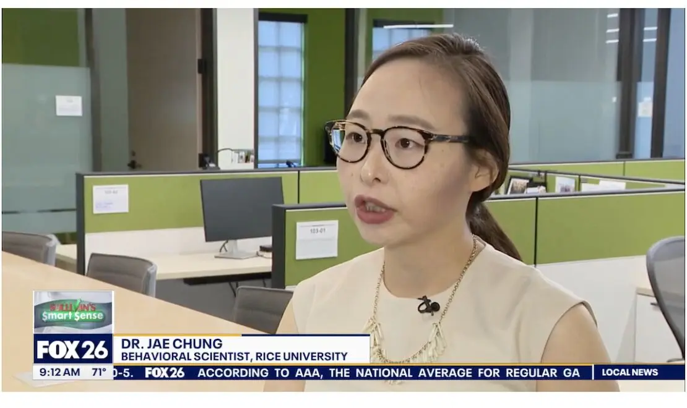
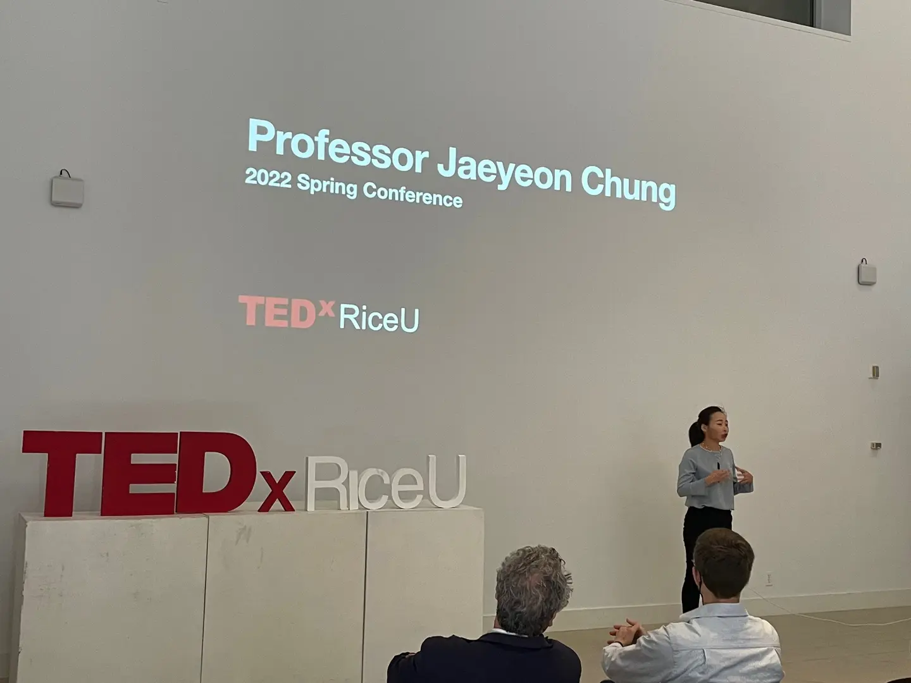
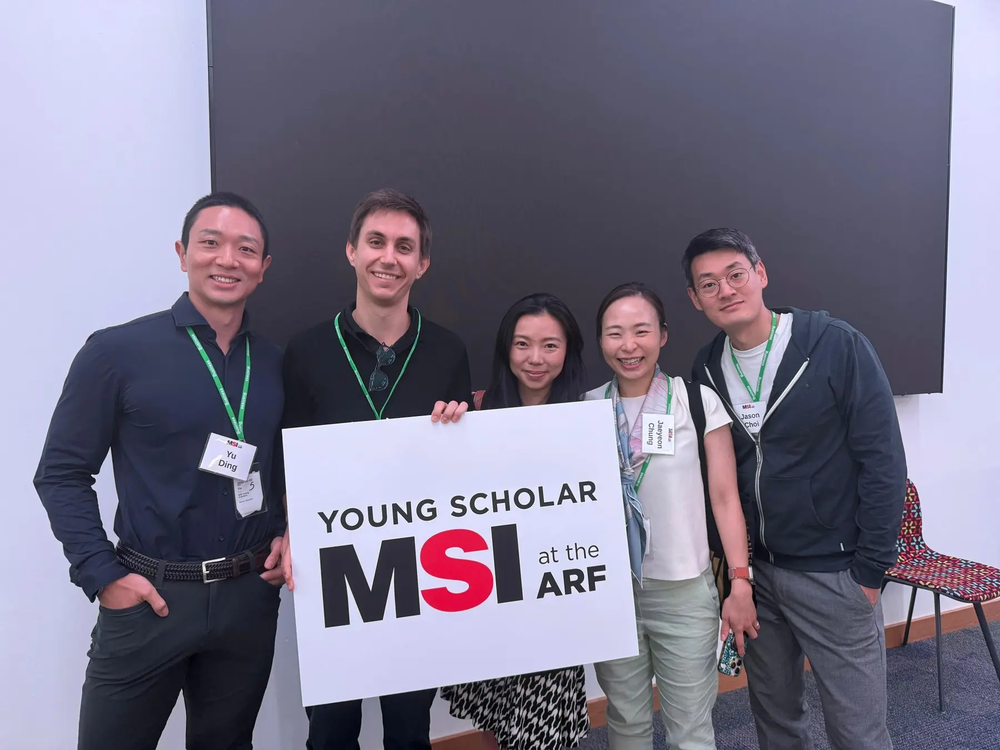
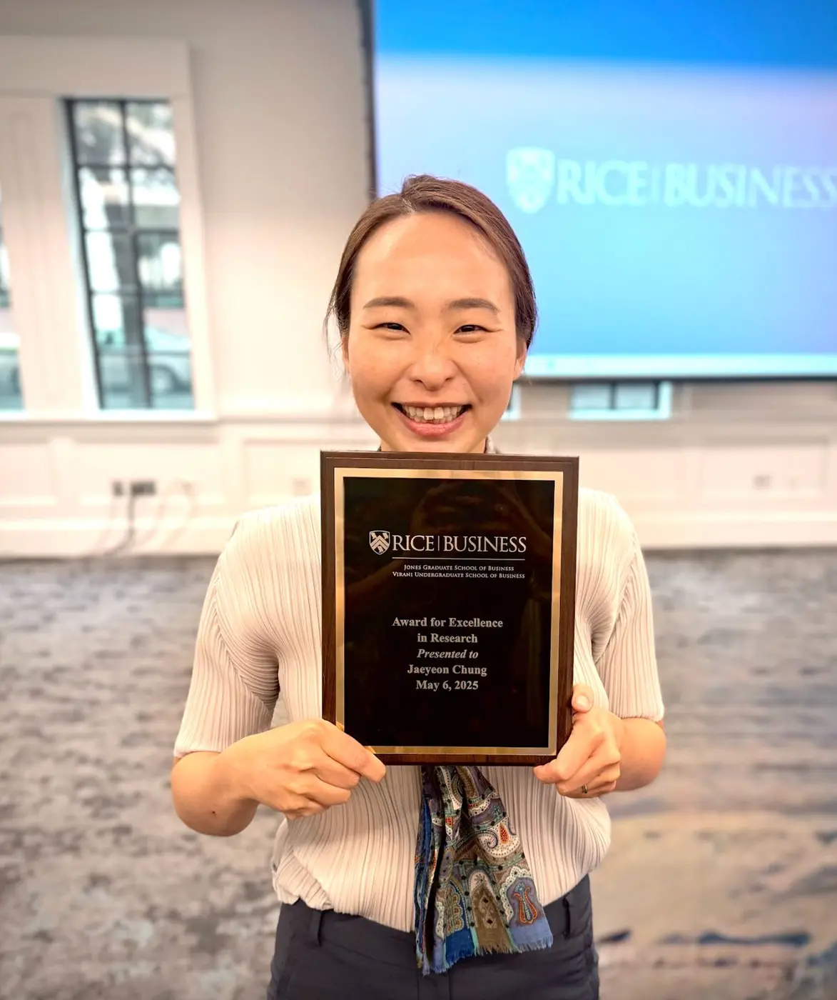
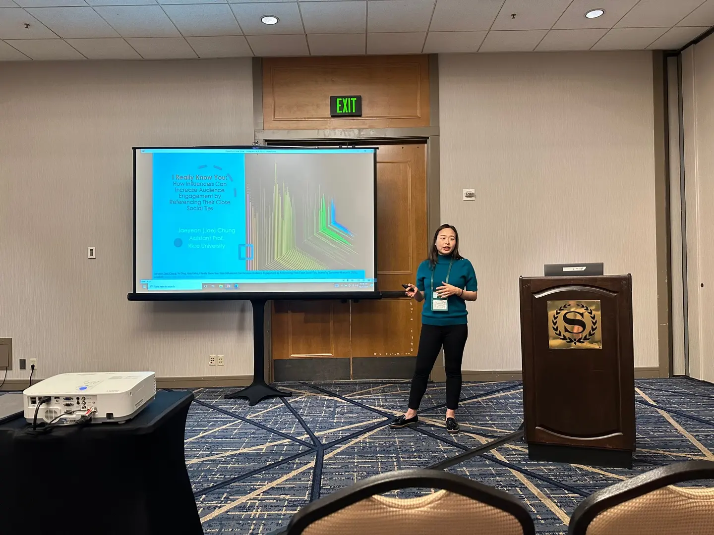
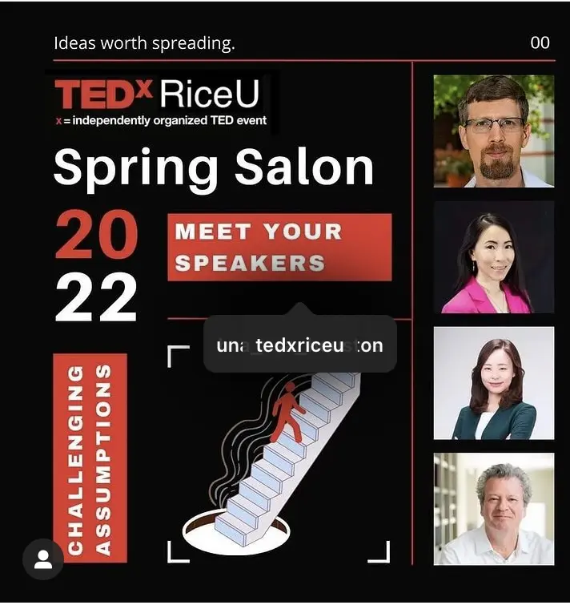
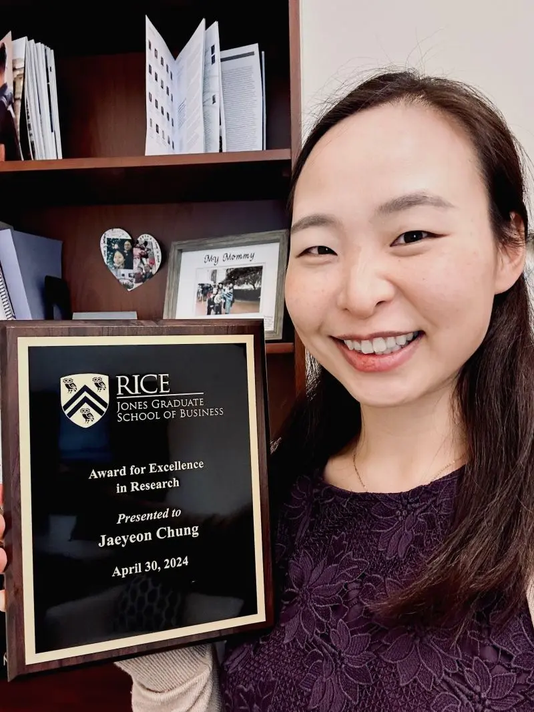
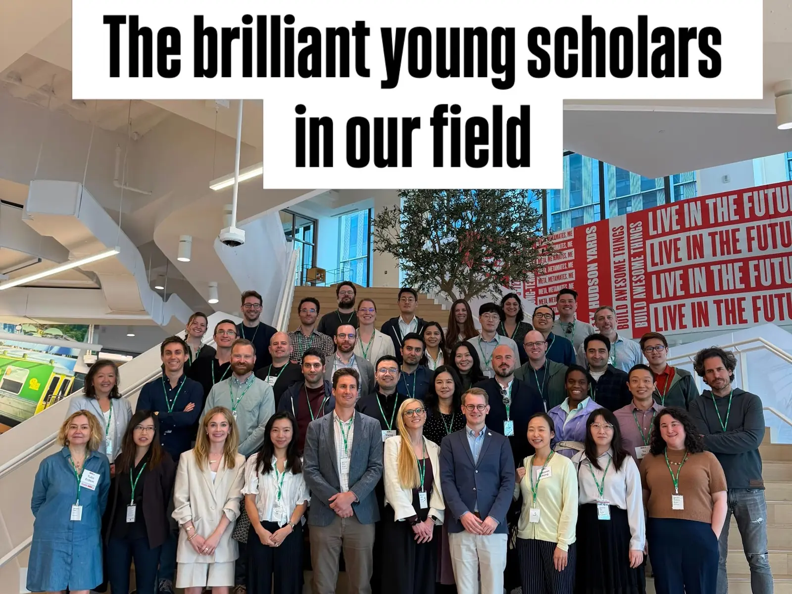

Media
Fox 26 News
Featured as a behavioral-science and consumer-behavior expert.
PUBLIC ENGAGEMENT
Selected public talks, media appearances, research presentations, and professional honors.

Professor Chung speaking at the 2022 TEDxRiceU Spring Conference.
MEDIA · HONORS · SCHOLARLY ENGAGEMENT

Featured as a behavioral-science and consumer-behavior expert.

Recognized as part of the Marketing Science Institute's 2025 cohort of emerging marketing scholars.

Rice Business, 2024 and 2025.

Presenting research on social-media influencers and consumer engagement at an academic conference.


